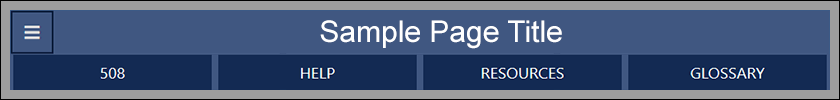

The training environment for the JKO Learning Content Management System (LCMS) is comprised of three parts.
The course tabs, used for navigating between lessons and suspending the course, are found at the top of the player. The course tree (table of contents), used for indicating your progress through the course, is found on the left side of the player. And the course navigation buttons, used for making your way through the course, are found at the bottom right, below the course content area.


Previous Lesson Tab
The Previous Lesson tab is used to review completed lessons in the course. Lessons can be reviewed at any time except during the Post Test or after the completion certificate has been received.
Next Lesson Tab
Use the Next Lesson tab when you've finished a lesson and are ready to advance to the next lesson in the course. Some courses do not allow learners to continue past incomplete lessons.
Course Tree
The course tree displays the lessons and your progress. Open folders can be collapsed. Closed folders can be expanded. Completed lessons will have a green checkmark. Incomplete lessons will have a half-filled circle. Some courses prevent you from advancing past incomplete lessons. Unviewed lessons will have an open circle.
Suspend Tab
Use the Suspend tab to bookmark your current progress in the course.
Help Tab
The Help tab recalls the course description and its terminal learning objective, as well as a description of the Learning Management System (LMS) and its navigational elements.
Exit Course Tab
The Exit Course tab will close the active window. To resume the course, re-launch it from the My Training tab in the JKO LMS and then select the Resume tab at the top of the window. Courses have bookmarking and will resume from the last lesson viewed. If you have completed the course, you can view its certificate by selecting the Certificates tab in the JKO LMS.
Hide TOC Tab
The Hide TOC (table of contents) tab will close the course tree to the left of the main window. While the course tree is closed, the Hide TOC tab becomes an Open TOC tab.

The following buttons can be accessed by selecting the Options button at the left edge of the title bar. Some courses may not have all the buttons shown here.
508 Button
The 508 button provides a modified text-based storyboard PDF option for visually impaired learners to use with screen readers.
Help Button
The Help button opens this resource in a new window.
Resources Button
The Resources button displays a list of additional resources for this course. These resources could include Universal Joint Task Lists (UJTLs) and Joint Publications.
Glossary Button
The Glossary button lets you browse through the course keywords.
Back and Next Buttons
The Back and Next buttons are used to review or advance pages within your current lesson. The lesson pagination is also displayed here.
The NEXT button will be inactive on each page until you've viewed all the content of that page. On pages with videos, all videos must be viewed. On pages with buttons that reveal additional information, you must select all buttons and view all content before the NEXT button activates.
If you are at the end of a lesson, you must continue by using the Next Lesson tab found on the upper left of the window.
Page Number/Jump to Topic Button
The page number button displays your progress through a lesson in the course. It is also selectable and will open a menu of all the pages in a lesson. From this menu, you may navigate directly to a page you have already viewed by selecting its title.